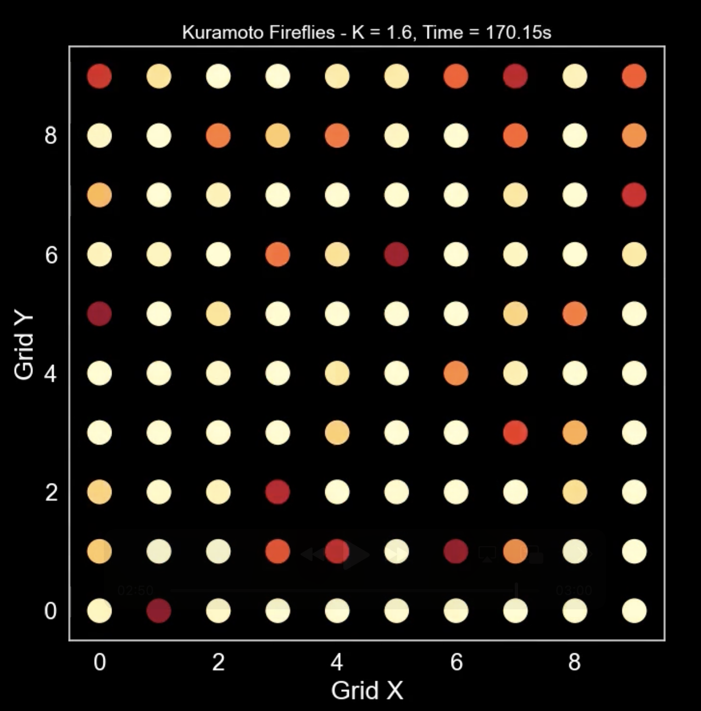

### Secrets of Rhythm Unveiled by the Kuramoto Model #### Why Does Applause Synchronize? <img src="assets/images/title.png" height="400px"> --- ### About Me <div class="profile-container"> <div class="profile-left"> * Same (мег-сск) * üßë‚Äçüíª Freelance Software Engineer * üßë‚Äçüéì Working professional studying at an online university * Areas of expertise: * üì∏ Computer Vision (Image Recognition/Point Cloud Processing) * üåç Spatial Information Processing (GIS/Remote Sensing) * ‚òÅÔ∏è Cloud Infrastructure Design/IaC (AWS, GCP) * [GitHub](https://github.com/s-sasaki-earthsea-wizard) * [YouTube](https://www.youtube.com/@SyotaSasaki-EW) * [Speaker Deck](https://speakerdeck.com/syotasasaki593876) </div> <div class="profile-right"> </div> </div> --- ### Today's Topics <div class="simple-box"> * We'll discuss the Kuramoto model, which can model "synchronization phenomena" (when random rhythms align)! * We'll break down the meaning of the Kuramoto model's equation * Let's observe a simulation of the Kuramoto model recreating "firefly flashing" * The Kuramoto conjecture and the critical coupling constant * Introduction to representative "phase transitions" </div> --- ## Overview of the Kuramoto Model --- ### The Kuramoto Model <div class="simple-box"> * The Kuramoto model is a mathematical model for describing phenomena where "rhythms synchronize" * It was proposed by Dr. Yoshiki Kuramoto in 1975 * Let's watch a video of metronomes synchronizing! </div> --- ### Applications of the Kuramoto Model <div class="simple-box"> * It can model "rhythm synchronization phenomena"! * üëè Applause rhythms * Firefly illumination rhythms * Power grids (when generator frequencies get out of sync, blackouts occur!) * Heartbeat rhythms (disruption leads to atrial fibrillation) </div> --- ### The Kuramoto Model Equation $$ \frac{d\theta_i}{dt} = \omega_i + \frac{K}{N} \sum_{j=1}^N \sin(\theta_j - \theta_i) $$ <div class="simple-box"> * $\theta_i$ is the phase of oscillator $i$ * $\omega_i$ is the angular velocity of oscillator $i$ * $K$ is the strength of interaction (coupling constant) * $N$ is the number of oscillators </div> --- ### The Second Term $$ \frac{K}{N} \sum_{j=1}^N \sin(\theta_j - \theta_i) $$ <div class="simple-box"> * Think of $\theta_i$ as your applause rhythm and $\theta_j$ as other people's applause rhythms * This term represents the average deviation between your rhythm and everyone else's * The larger the coupling constant $K$, the easier it is for rhythms to synchronize </div> --- ### Meaning of the Coupling Constant $K$ <div class="simple-box"> * The larger the coupling constant $K$, the easier it is for rhythms to synchronize * When $K$ is small, rhythms don't synchronize * In the applause example, $K$ represents how much you're consciously trying to match your applause to others * When $K=0$, you're not paying attention to others' applause at all and maintaining your own rhythm * Let's see examples of this in simulation later! </div> --- ### Revisiting the Kuramoto Model Equation $$ \frac{d\theta_i}{dt} = \omega_i + \frac{K}{N} \sum_{j=1}^N \sin(\theta_j - \theta_i) $$ <div class="simple-box"> * The "rate of change of your rhythm" is determined by the "average deviation from others' rhythms" and coupling constant $K$ </div> --- ## Simulation of the Kuramoto Model --- ### Simulating the Kuramoto Model <div class="simple-box"> * Someone shared Kuramoto model simulation code on GitHub, so I modified their code to play around with it! * https://github.com/fabridamicelli/kuramoto * Let's use this code to observe how firefly flashing rhythms synchronize! </div> --- ### Firefly Flashing: $K=2$ <div class="simple-box"> * Rhythms gradually synchronize over time! </div> <img src="assets/images/firefly-K=2.png" width="55%"> --- ### Firefly Flashing: $K=5$ <div class="simple-box"> * With a larger coupling constant, rhythms synchronize quickly! </div> --- ### Firefly Flashing: $K=0$ <div class="simple-box"> * When the coupling constant is 0, rhythms never synchronize! </div> <img src="assets/images/firefly-K=0.png" width="50%"> --- ### The Mysterious Behavior of the Coupling Constant <div class="simple-box"> * When $K=1.59$, rhythms don't synchronize * When $K=1.6$, rhythms synchronize (though it takes time) </div> <div class="container"> <div class="col-left"> </div> <div class="col-right">  </div> </div> --- ## The Kuramoto Conjecture and Phase Transitions --- ### The Kuramoto Conjecture <div class="simple-box"> * When the coupling constant exceeds the critical point $K_c$, rhythms suddenly begin to synchronize * It's like water suddenly turning to ice at 0¬∞C </div> The critical point $K_c$ is: $$ K_c = \dfrac{2}{\pi g(0)} $$ * $g(\omega)$ is the distribution function of angular velocities * $g(0)$ is the distribution function when $\omega=0$ --- ### Calculating the Critical Point <div class="simple-box"> * In our simulation, the angular velocity distribution function $g(\omega)$ is the standard normal distribution $N(0,1)$ </div> $$ g(\omega) = \frac{1}{\sqrt{2\pi}} e^{-\frac{\omega^2}{2}} $$ --- ### Mean Field Frequency <div class="simple-box"> * The average angular velocity of all oscillators becomes 0 * This average angular velocity is called the "mean field frequency" * The entire system's distribution can be represented by $g(0)$ </div> $$ g(0) = \frac{1}{\sqrt{2\pi}} $$ --- ### Calculating the Critical Point $$ K_c = \dfrac{2}{\pi g(0)} = \dfrac{2}{\pi \frac{1}{\sqrt{2\pi}}} = \sqrt{\dfrac{8}{\pi}} \simeq 1.596 $$ <div class="simple-box"> * $K=1.6$ barely exceeds the critical point, so rhythms synchronize! * This phenomenon, where properties change dramatically beyond a critical point, is called a "**phase transition**" </div> --- ### Examples of Phase Transitions <div class="simple-box"> * Phase transitions appear in various physical phenomena * Water turning to ice at 0¬∞C * Water evaporating at 100¬∞C * Magnets losing magnetism at high temperatures * Vacuum phase transitions (the beginning of the universe) </div> --- ### Proof of the Kuramoto Conjecture <div class="simple-box"> * The Kuramoto model was proposed in 1975, and the Kuramoto conjecture was formulated in 1984 * The Kuramoto conjecture was proven in 2012 by Dr. Hayato Chiba, who was at Kyushu University at the time! * https://arxiv.org/abs/1008.0249 * Therefore, it should now be called the "Kuramoto-Chiba Theorem" </div> --- ### Summary <div class="simple-box"> * The Kuramoto model can explain phenomena where "rhythms synchronize" * The coupling constant represents the tendency to adjust to deviations from surrounding rhythms * When the coupling constant exceeds the critical point, rhythms suddenly synchronize (Kuramoto conjecture, proven in 2012) * The Kuramoto model is a representative model of phase transition phenomena </div> --- ### Call for Lightning Talk Presenters <div class="simple-box"> * The Physics Study Group is looking for lightning talk presenters! * Any genre is welcome! * If no one volunteers, the organizer will have to do another "lightning talk" that's actually a giant recital... * If you're interested, please join the Physics Study Group Discord server! </div> <img src="assets/images/qrcode.png" width="200px"> --- ### Announcements <div class="simple-box"> * The next meeting is scheduled for June 28th * In addition to lightning talks, we also welcome suggestions for physics YouTube videos that you'd like to watch together with everyone! </div>